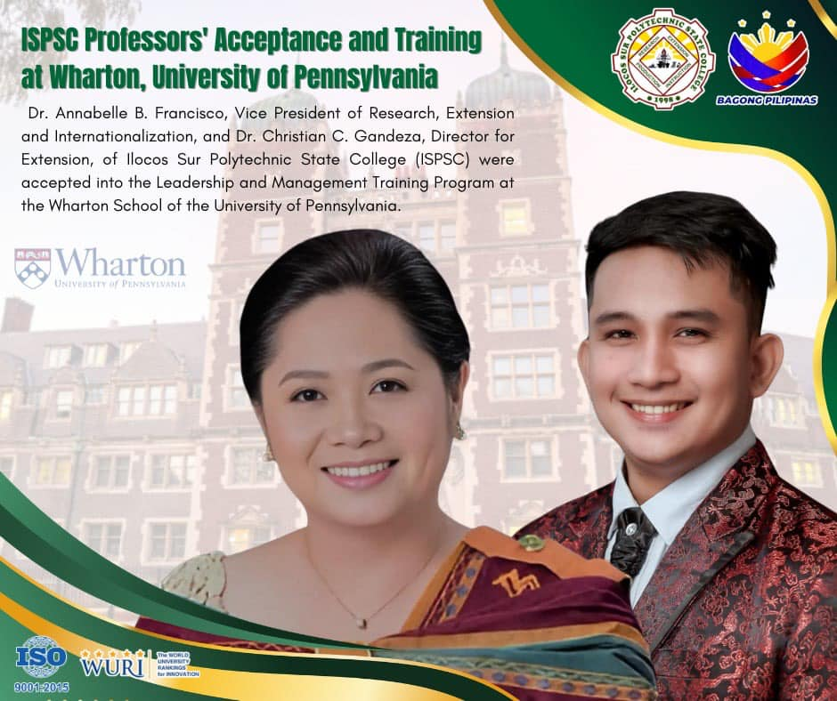
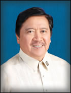

University of Ilocos Philippines (UIP) is a distinguished, comprehensive six-campus institution of higher
learning committed to providing exceptional professional and technical training at both undergraduate and
graduate levels. UIP excels in diverse fields, including economics, agriculture, fishery, trade, home industry,
brengineering, education, forest research and conservation, management, finance, accounting, business administration,
public administration, and other relevant disciplines.
Beyond academics, UIP is a hub for pioneering scientific and technological research, driving innovation to
meet global challenges while advancing the university's mission.
With its main campus strategically situated in Candon City, Ilocos Sur, UIP extends its reach through its six other campuses located in Darapicap, Candon City and the municipalities of Narvacan, Sta. Maria, Santiago, Tagudin, and Cervantes.
These campuses are integral to delivering accessible education and fostering community engagement throughout the second district of Ilocos Sur.
UIP is more than just an institution—it's a beacon of excellence. It nurtures leaders, innovators, and changemakers, equipping students with skills and knowledge to thrive in a rapidly evolving world. With state-of-the-art facilities, highly qualified faculty, and a student-centered approach, UIP remains at the forefront of education, research, and community development.



Brief History of UIP
The University of Ilocos Philippines formerly known as (ISPSC) was created by virtue of RA 8547 authored by the then Congressman of the 2nd District of Ilocos Sur, Hon. Eric D. Singson converting the then Ilocos Sur Polytechnic College (ISPC) into a state college. The charter was signed into law by President Fidel V. Ramos on February 24, 1998. The then Ilocos Sur Polytechnic College was created by virtue of RA 7960 also authored by then Congressman Eric D. Singson and signed into law on March 29, 1995. The law converted the then Ilocos Sur Agricultural College (ISAC) into a polytechnic college integrating into it seven vocational-technical and general academic secondary schools in the second district of Ilocos Sur namely: Narvacan School of Fisheries NASOF), Southern Ilocos Sur School of Fisheries (SISSOF), Ilocos Sur Experimental Station and Pilot School of Cottage Industries (ISESPSCI), Tagudin General Comprehensive High School (TGCHS), Cervantes National Agro-Industrial School (CNAIS), Suyo National High School and Salcedo National High School. After its conversion into a state college, two of the campuses, Suyo Campus and Salcedo Campus, were reverted back to the Department of Education.


Vision
English: A vibrant and nurturing Polytechnic Service College for transforming lives and communities.
Filipino (Pangitain): Maningning at mapag-arugang politeknikong serbisyo-kolehiyo para sa pagpapaunlad ng buhay at lipunan.
Iloco (Sirmata): Narimat ken managtaripato nga serbisyo-kolehiyo politekniko para ti pannakabalbaliw iti biag ken kagimongan.
Mission
English: To improve the lives of people and communities through quality instruction, innovations, productivity, initiatives, environment and industry-feasible technologies, resource mobilization, and transformational outreach programs and services.
Filipino: Mapaunlad ang buhay ng tao at lipunan sa pamamagitan ng de-kalidad na pagtuturo, pagkamalikhain, pangunguna sa pagiging produktibo, teknolohiyang pangkapaligiran at industriya, tamang paggamit ng pinagkukunang yaman, at mga programang serbisyong makapagbabago sa kabuhayan.
Iloco: Mapadur-as iti panagbiag dagiti tattao ken gimong babaen iti de-kalidad a panagisuro, panagpartuat, nabunga ken naballigi a gannuat, teknolohiya a mangsaluad iti aglawlaw ken iti industria, naikalintegan a panagusar dagiti pagbaknangan ken pannakaipaay iti programa ken serbisyo nga mangidanon iti panagbalbaliw.
Goals and Objectives
- To make the college responsive and relevant to the individual and social needs for optimum human development.
- To offer priority programs in tourism, teacher education, agriculture fishery, agro-forestry, trades, business industry and Information technology which will generate knowledge base to educate the people and communities.
- To conduct a wide-range of research and extension programs to provide quality training and technologies for inclusive growth.
- To implement government programs and thrusts in the context of regional and national development for poverty alleviation.
- To prepare and develop highly productive and employable professionals, “glocal” (global and local) technopreneurs who are morally-crafted and environmentally-oriented for coping globalization standards.
Core Values
- Productivity - The delivery of quality programs in instruction, research, extension, production and development of responsive, proactive professionals and graduates and professing determination and hard work in the system.
- Resiliency - Refers to the renewal and motivational strategies, looking at the bright side of academic life and cultivating positive attitudes amidst failures and adversities.
- Accountability - Means the responsibility, answerability, transparency, impartially, decisiveness and delegation of work roles and streamlining of functions.
- Ingenuity - Refers to prudent use of resources, prudence in spending, cost cutting measure and deciding the best possible action considering circumstances.
- Synergy - Pertains to the teamwork, collaboration, orchestration, subordination and of all partner agencies, sponsors and stakeholders, parents, alumni and communities.
- Excellence - Refers to global orientation, borderless perspective, equal opportunities, empowerment, and transformation, multi-tasking and leading by example.